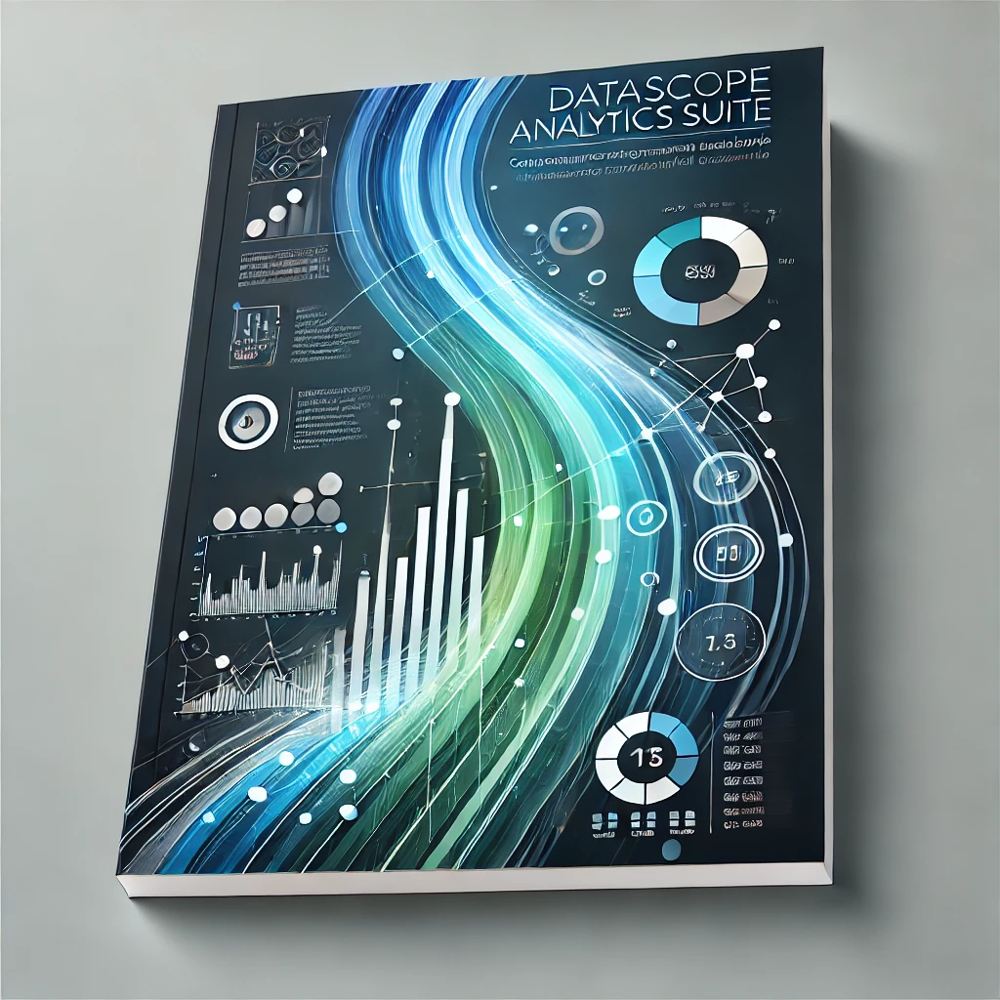

In this project, I cleaned and visualised Airbnb data to uncover actionable insights. The analysis involved handling missing values, outliers, and redundancies while creating visualisations to explore pricing, availability, and host performance. Key tasks included mapping listing locations, analysing room type preferences, and identifying active neighborhoods. This project highlights my ability to process and analyse real-world data for business applications.

In this project, I performed data cleaning and exploratory data analysis on a global layoffs dataset from 2021-March 2023. The cleaning process involved handling duplicates, standardizing data, addressing missing values, and converting data types to ensure consistency and accuracy. The analysis uncovered trends in layoffs by industry, country, and company, as well as insights into the impact of funding stages and geographical locations. Key tasks included identifying top companies by layoffs, exploring year-over-year trends, and analyzing the largest layoffs globally. This project demonstrates my expertise in data preprocessing and uncovering actionable insights from real-world datasets.

In this project, I developed a comprehensive suite of interactive Power BI dashboards to analyze and visualise data across three distinct domains, showcasing my ability to transform raw data into actionable insights. Each dashboard highlights a unique dataset and use case, demonstrating proficiency in data modeling, visualisation design, and storytelling.